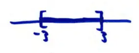

15.1 Functions of Several Variables
If \( y = f(x) = \sqrt{9 - x^2} \)
input↑
output↑
The set of all acceptable input values form the domain.
For this function, the domain is:
\[ 9 - x^2 \ge 0 \]
\[ -3 \le x \le 3 \quad \text{or} \quad [-3, 3] \]

Note: this is a line or portions of a line.
The set of all possible output values is the range.
Here, the range is \( [0, 3] \).